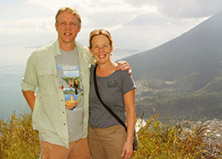

Drs. Maj and Justin StormoGipson
Since graduating from medical school my wife, Maj, and I have enjoyed going to third-world countries and delivering much needed medical care.
Before specializing (ophthalmology for me and pediatrics for Maj) we were general practice doctors for 2 years in Jinotega, Nicaragua.
That experience has inspired us to return with a medical team almost every year since we finished our residencies in 1991. We have worked in Mexico, Guatemala, and Nicaragua.
Over the years, we have introduced many fellow colleagues from the U.S. to third-world medicine. Many people in the U.S. have the desire to use their medical training to help in developing countries, but they have a hard time finding a situation where they can apply their skills. It has been very fulfilling to lead trips and give people the opportunity to contribute.
Why do we think this work is so important and why do we spend so much time, money, and energy on leading these trips?
First of all, there are the obvious needs our patients have. Restoring and improving visual function is important in any society. For poor people in third-world countries, their survival depends on it.
However, just as important is the reverse mission aspect of these trips. During our two years in Jinotega, Nicaragua we learned how we can use our medical knowledge to impact a small town, and more importantly, how that small town can impact us and our communities back in the United States.
We have come to realize that the relationships that come from our interactions with patients in the third-world influences us as much as it does the patients. When we return home, our experiences influence our communities.
We truly believe that this reverse mission may, in the long run, be the most important result of our medical mission trips.